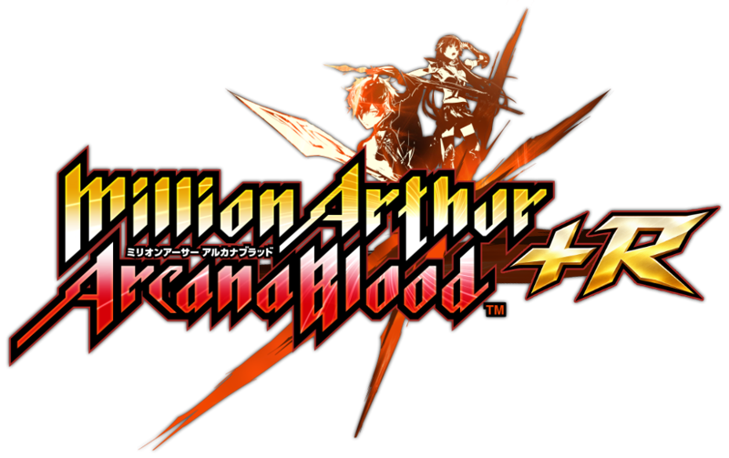

Rollback netcode and a new front end for Million Arthur: Arcana Blood on Steam.
A free, fan-made mod. Online matches feel close to playing side by side, and rooms with tables let several pairs play at the same time. Start it from its launcher: it keeps the mod up to date, and no game file is changed.
In the game
Features
Rollback netcode
Online play over Steam. The game state is saved every frame and replayed when the other player's input arrives late. A desync check runs in the background.
Rooms and tables
Public or private rooms for 2 to 8 players. Find rooms in Room search, invite Steam friends, or share a private room's code. Sit at a table, both press READY, and the fight starts.
Room settings
The host sets rounds, round timer, set length and room size. Text chat, and the host can kick.
My setup
Pick your character, colour, Support Knights presets and stage once. Every match starts straight away with them, no select screens.
Instant rematch
Go again without the versus and loading screens, or head back to the room together.
Settings
Remap controller and keyboard with a button check, sound volumes, display options and your own input delay. The mouse works in every menu.
Connection handling
A clear pop-up when the other player leaves or the connection drops, and a waiting banner on short hiccups.
Updates and logs
The launcher checks for a new version each time and installs it with one click, in a few seconds. Pack logs makes one zip for bug reports, with names and Steam IDs hidden.
Install
You need the official Steam version of Million Arthur: Arcana Blood, and Steam has to be running.
The mod does not include the game or any part of it. It checks the game version at start-up and stays off if it doesn't match.
- Download
ArcanaBlood-PlusR-v0.1.0-beta-Setup.exe. - Run it. It installs for your Windows user only, with no admin rights needed, and adds a Start menu shortcut and, if you want, a desktop shortcut.
- Start Arcana Blood +R from the Start menu or the desktop.
To remove it: Windows Settings › Apps › Arcana Blood +R › Uninstall.
- Download
ArcanaBlood-PlusR-v0.1.0-beta.zip. - Unzip it anywhere you like, but not inside the game's folder.
- Start
arcana_launcher.exefrom that folder.
To remove it: delete the folder, and dinput8.dll from the game's folder.
Press Play in the launcher: it finds the game through Steam, puts one small file (dinput8.dll) in the game's folder and starts the game with the mod. Started from Steam directly, the game stays the plain game. The first time, Windows may show "Windows protected your PC" because the files are not code-signed: click More info › Run anyway. If your antivirus removes a file of the mod, restore it and allow the mod's folder: it is a false alarm. Updates are installed by the launcher itself, and your settings and setup are kept.
Play online
1 · Set up
On the main menu press Y or click the My setup card, and pick your character, colour, Support Knights and stage. Check Settings for your buttons and input delay.
2 · Find a room
Create room, or join one from Room search. Invite friends with X, or share the CODE of a private room.
3 · Sit and ready
Press A on a free seat, then A on your own seat to get READY. When both players are ready, the fight starts after 3-2-1.
4 · Again?
After the fight pick Rematch or Back to room. B stands up, hold B to leave the room.
F1 (or Back + Start on a controller) opens and closes the main menu. Both players need the same version of the mod.
Help and reporting
- "Could not find the game": make sure the game is installed through Steam and Steam is running.
- The game starts without the mod: start it from the launcher (Play), not from Steam.
- Empty room list: only rooms of the same mod version show up. Create a room, or ask your friend for an invite or the code.
- Choppy online play: raise the input delay in Settings › Online by 1. A wired connection helps most.
This is a beta, so problems are expected and reports help a lot.
In the game, open Help › Report a problem › Pack logs. That puts the logs in one zip on your Desktop, with names and Steam IDs hidden. Then open an issue on GitHub and attach the zip.
More troubleshooting is in the README.
About
- GGenie, creator of Arcana Blood +R.
- Dear ImGui by Omar Cornut and contributors.
- Fonts: Michroma by Vernon Adams, Saira Semi Condensed by Omnibus-Type (SIL Open Font License).
- GGPO by Tony Cannon, the rollback idea this mod follows.
- The Mizuumi wiki and the Million Arthur community.
- Million Arthur: Arcana Blood by Square Enix and Team Arcana.
This mod was made with heavy use of AI. Most of the code, the reverse engineering notes and the documentation were written by an AI assistant (Claude, by Anthropic), directed by GGenie, who decided what to build and tested every build in the game.
The code has been tested by playing, not by a formal review. Keep that in mind if you build on it, and please report anything that looks wrong.
The full source code is on GitHub under the MIT licence.
There is no art, music, sound or code from the game in the mod. It reads what it shows from your own installed copy. The logo is based on the game's logo and the screenshots show the game running with the mod; they belong to their owners and will be removed on request.